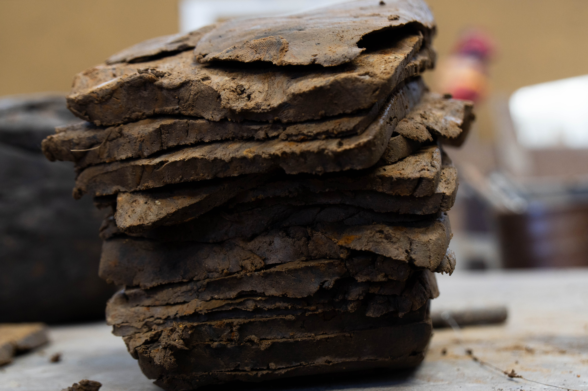

Earth, Fire, & Time

Sculpted by Nature Itself
Bizen pottery uses no artificial glazes or paints. Its distinctive reddish-brown hues and organic textures are born purely from the combination of dense rice-field clay and intense pine wood fire inside the kiln.
Over two weeks of continuous firing at temperatures exceeding 1,200°C (2,192°F), flying wood ash settles on the unglazed clay, melting naturally to form a one-of-a-kind glass glaze created entirely by nature.
Meet the Master
Selected Creations

Flame-Burned Vase
Natural ash glaze (Goma) effect captured on a structured dark clay body.

Earth-Toned Vessel
Subtle reddish gradient (Hidasuki) achieved through straw wrap firing.

Modern Form V
Contemporary geometric silhouette fused with raw tactile clay surface.

Anagama Kiln Markings
Deep charcoal tones created by direct contact with burning red pine charcoal.

Textured Pitcher
Formed with ancient rice-paddy clay rich in iron and natural minerals.

Sculptured Object
A harmonious balance between traditional heritage and modern interior design.
The Anagama Kiln Fire
The firing of Bizen ware is a relentless struggle and dialog with fire. Burning red pine wood day and night for over 10 days requires absolute concentration and physical dedication.
No two pieces are ever identical. Every subtle shift in wind, humidity, and flame path creates a unique masterpiece that tells the story of the moment it was forged.